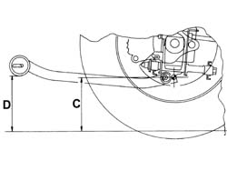
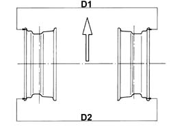
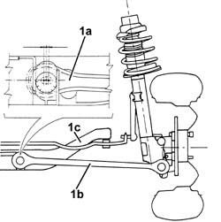
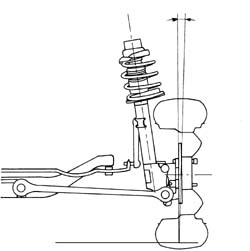
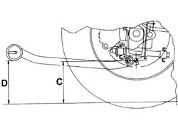
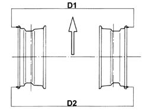
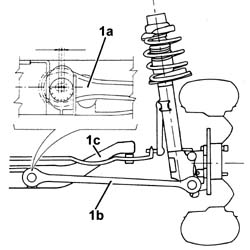
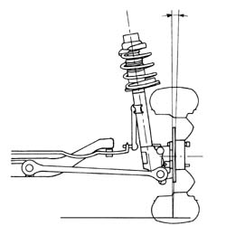

4450A40 rear wheel geometry - check using optical equipment
- Path
- Procedures > 44 SUSPENSION AND WHEELS > 4450 WHEELS AND HUBS > 4450A wheel geometry > 4450A40 rear wheel geometry - check using optical equipment
- Kind
- repair procedure (removal / refitting; the operation number is the code)
- Applies to
- all engines; all production periods
- Interactive page
- https://sloeber94.github.io/elrnDB-a156/en/#/3238218
Applies to: all engines; all production periods
Check the rear wheel geometry is within specified limits with the vehicle unladen and the tanks and reservoirs filled.
 | Measurement | Value | |
|---|---|---|---|
- | Standard A (mm) | Class A | 45.9 +/- 7 |
Check the rear wheel geometry, for vehicles with sports packs, is within specified limits with the vehicle unladen and the tanks and reservoirs filled.
| Measurement | Value | |
|---|---|---|---|
- | With sports kit, Standard A (mm) | Class A | 23.6 +/- 7 |

Applies to: all engines; all production periods
The rear wheel toe in figures, with the vehicle unladen and all tanks and reservoirs filled, are given in the table.
| Measurement | Value | |
|---|---|---|---|
- | D2 - D1 (mm) | 3.27 +/- 1 | |
(Unladen vehicle filled with fluids) (-) | - | ||
The rear wheel toe in figures, for vehicles with sports packs, with the vehicle unladen and all tanks and reservoirs filled, are given in the table.
| Measurement | Value | |
|---|---|---|---|
- | D2 - D1 (mm) | With sports kit | 3.22 +/- 1 |
(Unladen vehicle filled with fluids) (-) | - | ||

Applies to: all engines; all production periods
1. To adjust the rear wheel toe in, use the cam bolts (1a) fixing the rear track control arms (1b) to the rear suspension crossmember (1c).

Applies to: all engines; all production periods
The rear wheel camber angles, which cannot be adjusted, with the vehicle unladen and all tanks and reservoirs filled, are given in the table.
| Measurement | Value | |
|---|---|---|---|
- | Standard A () | Class A | 0°48' -40' |
The rear wheel camber angles, which cannot be adjusted, for vehicles with sports packs, with the vehicle unladen and all tanks and reservoirs filled, are given in the table.
| Measurement | Value | |
|---|---|---|---|
- | With sports kit, Standard A () | Class A | 1°15' -40' |

Applies to: engines: 3.2 V6; all production periods
Check the rear wheel geometry is within specified limits with the vehicle unladen and the tanks and reservoirs filled.
| Measurement | Value | |
|---|---|---|---|
- | Standard A (mm) | Class A | 26 +/- 7 |

Applies to: engines: 3.2 V6; all production periods
The rear wheel toe in figures, with the vehicle unladen and all tanks and reservoirs filled, are given in the table.
| Measurement | Value | |
|---|---|---|---|
- | D2 - D1 (mm) | 3.0 ± 1 | |
(Unladen vehicle filled with fluids) (-) | - | ||

Applies to: engines: 3.2 V6; all production periods
1. To adjust the rear wheel toe in, use the cam bolts (1a) fixing the rear track control arms (1b) to the rear suspension crossmember (1c).

Applies to: engines: 3.2 V6; all production periods
The rear wheel camber angles, which cannot be adjusted, with the vehicle unladen and all tanks and reservoirs filled, are given in the table.
| Measurement | Value | |
|---|---|---|---|
- | Unladen vehicle filled with fluids) () | Class A | 1° 16' +/-20' |

Topics that link to this page (12)
- 4450A wheel geometry
- H01 VEHICLE DRIFT
- H12 STEERING TOO SENSITIVE
- X50 TYRE WEAR
- 4420A10 l/h or r/h rear suspension spring/damper unit (one) r+r
- 4420A12 rear suspension damper (one), lh or rh - for mcpherson strut system - includes dismentling/rebuilding of assembly at bench r r
- 4420B16 front wishbone - r r
- 4420B18 rear wishbone - r r
- 4420C30 l/h or r/h rear suspension tie rod (one) - r+r
- 4420D42 rear suspension beam - r r
- 4450D10 hub of one rear wheel, l/h or r/h - r+r with wheel removed
- 4450D15 rear stub axle strut - r r